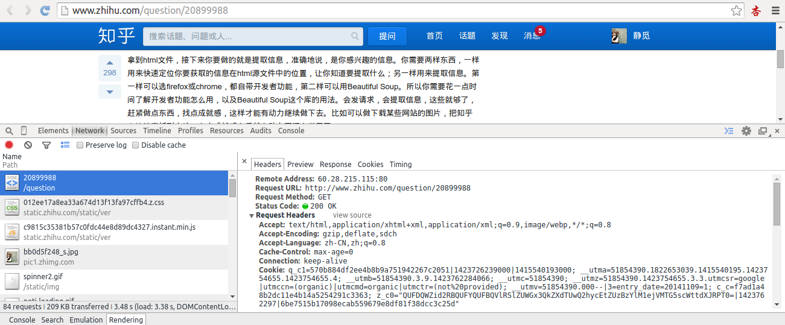

Python爬虫入门四之Urllib库的高级用法
1.设置Headers
有些网站不会同意程序直接用上面的方式进行访问，如果识别有问题，那么站点根本不会响应，所以为了完全模拟浏览器的工作，我们需要设置一些Headers 的属性。
首先，打开我们的浏览器，调试浏览器F12，我用的是Chrome，打开网络监听，示意如下，比如知乎，点登录之后，我们会发现登陆之后界面都变化了，出现一个新的界面，实质上这个页面包含了许许多多的内容，这些内容也不是一次性就加载完成的，实质上是执行了好多次请求，一般是首先请求HTML文件，然后加载JS，CSS 等等，经过多次请求之后，网页的骨架和肌肉全了，整个网页的效果也就出来了。

拆分这些请求，我们只看一第一个请求，你可以看到，有个Request URL，还有headers，下面便是response，图片显示得不全，小伙伴们可以亲身实验一下。那么这个头中包含了许许多多是信息，有文件编码啦，压缩方式啦，请求的agent啦等等。
其中，agent就是请求的身份，如果没有写入请求身份，那么服务器不一定会响应，所以可以在headers中设置agent,例如下面的例子，这个例子只是说明了怎样设置的headers，小伙伴们看一下设置格式就好。
import urllib
import urllib2
url = 'http://www.server.com/login'
user_agent = 'Mozilla/4.0 (compatible; MSIE 5.5; Windows NT)'
values = {'username' : 'cqc', 'password' : 'XXXX' }
headers = { 'User-Agent' : user_agent }
data = urllib.urlencode(values)
request = urllib2.Request(url, data, headers)
response = urllib2.urlopen(request)
page = response.read()
这样，我们设置了一个headers，在构建request时传入，在请求时，就加入了headers传送，服务器若识别了是浏览器发来的请求，就会得到响应。
另外，我们还有对付”反盗链”的方式，对付防盗链，服务器会识别headers中的referer是不是它自己，如果不是，有的服务器不会响应，所以我们还可以在headers中加入referer
例如我们可以构建下面的headers
headers = { 'User-Agent' : 'Mozilla/4.0 (compatible; MSIE 5.5; Windows NT)' ,
'Referer':'http://www.zhihu.com/articles' }
同上面的方法，在传送请求时把headers传入Request参数里，这样就能应付防盗链了。
另外headers的一些属性，下面的需要特别注意一下：
- User-Agent : 有些服务器或 Proxy 会通过该值来判断是否是浏览器发出的请求
- Content-Type : 在使用 REST 接口时，服务器会检查该值，用来确定 HTTP Body 中的内容该怎样解析。
- application/xml ： 在 XML RPC，如 RESTful/SOAP 调用时使用
- application/json ： 在 JSON RPC 调用时使用
- application/x-www-form-urlencoded ： 浏览器提交 Web 表单时使用
在使用服务器提供的 RESTful 或 SOAP 服务时， Content-Type 设置错误会导致服务器拒绝服务
其他的有必要的可以审查浏览器的headers内容，在构建时写入同样的数据即可。
2. Proxy（代理）的设置
urllib2 默认会使用环境变量 http_proxy 来设置 HTTP Proxy。假如一个网站它会检测某一段时间某个IP 的访问次数，如果访问次数过多，它会禁止你的访问。所以你可以设置一些代理服务器来帮助你做工作，每隔一段时间换一个代理，网站君都不知道是谁在捣鬼了，这酸爽！
下面一段代码说明了代理的设置用法
import urllib2
enable_proxy = True
proxy_handler = urllib2.ProxyHandler({"http" : 'http://some-proxy.com:8080'})
null_proxy_handler = urllib2.ProxyHandler({})
if enable_proxy:
opener = urllib2.build_opener(proxy_handler)
else:
opener = urllib2.build_opener(null_proxy_handler)
urllib2.install_opener(opener)
3.Timeout 设置
上一节已经说过urlopen方法了，第三个参数就是timeout的设置，可以设置等待多久超时，为了解决一些网站实在响应过慢而造成的影响。
例如下面的代码,如果第二个参数data为空那么要特别指定是timeout是多少，写明形参，如果data已经传入，则不必声明。
import urllib2
response = urllib2.urlopen('http://www.baidu.com', timeout=10)
import urllib2
response = urllib2.urlopen('http://www.baidu.com',data, 10)
4.使用 HTTP 的 PUT 和 DELETE 方法
http协议有六种请求方法，get,head,put,delete,post,options，我们有时候需要用到PUT方式或者DELETE方式请求。
- PUT：这个方法比较少见。HTML表单也不支持这个。本质上来讲， PUT和POST极为相似，都是向服务器发送数据，但它们之间有一个重要区别，PUT通常指定了资源的存放位置，而POST则没有，POST的数据存放位置由服务器自己决定。
- DELETE：删除某一个资源。基本上这个也很少见，不过还是有一些地方比如amazon的S3云服务里面就用的这个方法来删除资源。
如果要使用 HTTP PUT 和 DELETE ，只能使用比较低层的 httplib 库。虽然如此，我们还是能通过下面的方式，使 urllib2 能够发出 PUT 或DELETE 的请求，不过用的次数的确是少，在这里提一下。
import urllib2
request = urllib2.Request(uri, data=data)
request.get_method = lambda: 'PUT' # or 'DELETE'
response = urllib2.urlopen(request)
5.使用DebugLog
可以通过下面的方法把 Debug Log 打开，这样收发包的内容就会在屏幕上打印出来，方便调试，这个也不太常用，仅提一下
import urllib2
httpHandler = urllib2.HTTPHandler(debuglevel=1)
httpsHandler = urllib2.HTTPSHandler(debuglevel=1)
opener = urllib2.build_opener(httpHandler, httpsHandler)
urllib2.install_opener(opener)
response = urllib2.urlopen('http://www.baidu.com')
以上便是一部分高级特性，前三个是重要内容，在后面，还有cookies的设置还有异常的处理，小伙伴们加油！